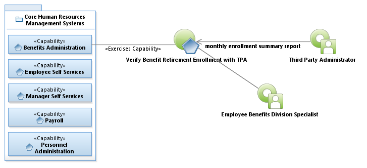
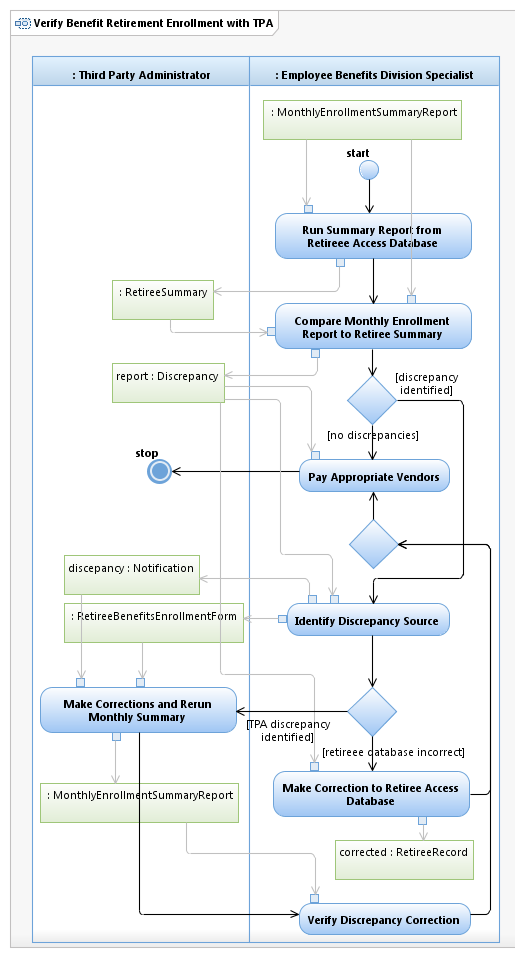

Use Case Model: Verify Benefit Retirement Enrollment with TPA
Architect: Rob Byrd, Chief Enterprise IT Architect
Date Last Modified: 07/20/2012
User Review: Karen Haywood, Division Program Manager
Date: 07/20/2012
Monthly, the Third Party Administrator (TPA) sends the Monthly Enrollment Summary Report containing a summary of the benefit elections for retired employees. The Employee Benefits Division Specialist compares the report against a Retiree Summary in the Retiree Access Database. Discrepancies are identified and corrected prior to paying appropriate vendors.
Follow link to Role Definitions

Use Case Model: Verify Benefit Retirement Enrollment with TPA

Activity Model: Verify Benefit Retirement Enrollment with TPA